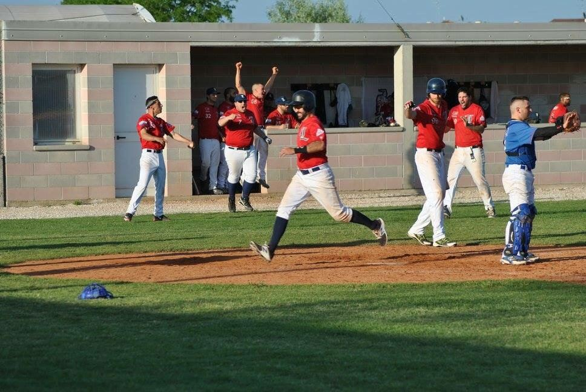
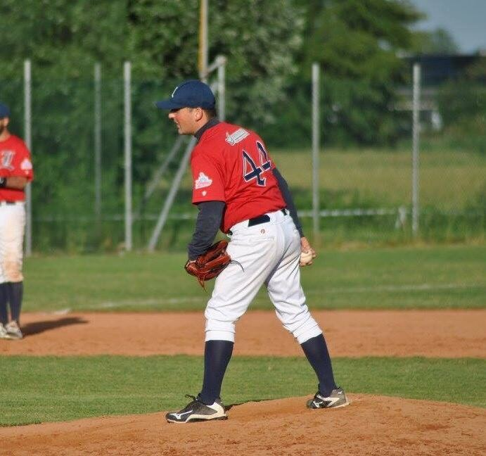

In gara 1 il partente designato dallo staff tecnico è Bosi in batteria con Becattini dietro casa base, diamante composto rispettivamente da Diaz, Parrini, Baratella e Degl’Innocenti shortstop.
All’esterno, partendo da sinistra, il capitano Nerbini, Geri e Nannucci.
Dopo circa tre inning di studio, nei quali i Lancieri chiudono con freddezza gli attacchi dei veneti, al quarto arriva il primo punto dei locali.
Con due out al quinto, i lastrigiani rispondono con un big inning da 4 punti ma la risposta del Rovigo non si fa attendere e al cambio campo arriva il pareggio. Parziale 4 a 4.
Alla settima ripresa i due attacchi segnano un punto ciascuno mantenendo ancora una situazione di parità, all’ottavo i lastrigiani si riportano avanti con un altra segnatura ma purtroppo capitolano in difesa subendo prima il punto del 6 a 6 e successivamente altri due punti sullo sviluppo di un errore difensivo.
Nell’ultimo attacco a disposizione non riusciamo a creare occasioni interessanti e la partita va al Rovigo.
Nell’incontro pomeridiano il monte è affidato a Vannini supportato da Castillo a ricevere, campo interno difeso da Diaz, Rudaj, Parrini e Degl’Innocenti sempre impegnato come interbase.
Bosi, Geri e Baratella difendono schierati come esterni campo.
Partenza sprint dei lastrigiani che segnano 2 punti con Parrini e Geri (in base su valida) spinti rispettivamente da Bosi e Baratella.
I veneti approfittano subito di un Vannini visto meno preciso rispetto al solito e nel primo attacco siglano 4 punti con una base ball e cinque valide.
Negli inning successivi arriva un solo altro punto per i bianco/blu mentre la formazione avversaria ne approfitta sia nel terzo che nel quarto. All’inizio della settimana ripresa il tabellone segna 9 a 3 per il Rovigo fermato dal quinto inning da un Pistol in ottima forma.

Il nono inning inizia con il parziale ancora nettamente a favore dei locali, 12-7, ma è qui che i Lancers mettono in campo cuore e coraggio siglando ben 6 punti con due fondamentali tripli. Il primo è di Degl’Innocenti che spinge Rudaj e Albano, poi è Bosi a far correre Becattini e Parrini.
Sul monte Vannuzzi, subentrato a Pistol, viene confermato da Ciappi per chiudere la gara, l’esperto pitcher lastrigiano non delude le aspettative e con il punto del pareggio in terza lascia al piatto l’ultimo uomo.
Grandissima vittoria di squadra, voluta fino in fondo. Adesso la testa è già al prossimo impegno di domenica 21 Maggio sul campo di via livornese, ospite la formazione del Lucca. VI ASPETTIAMO!